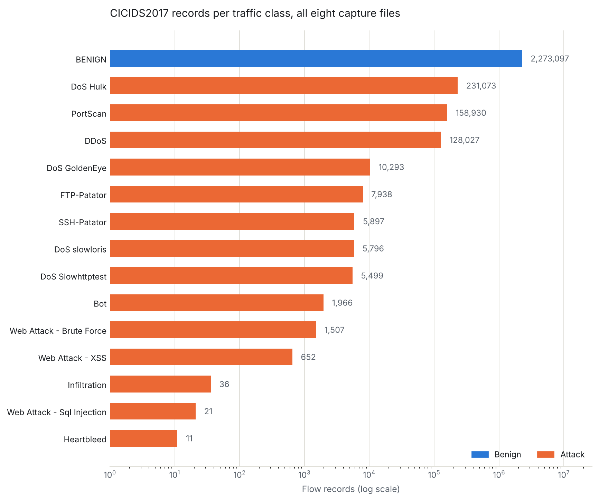
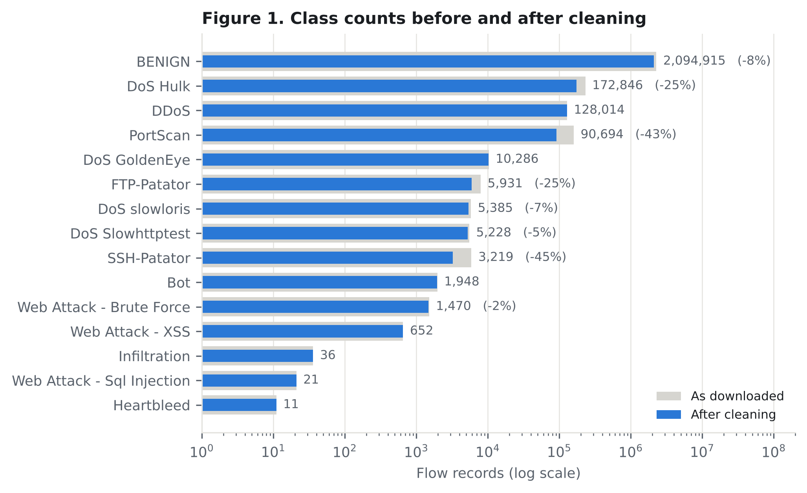
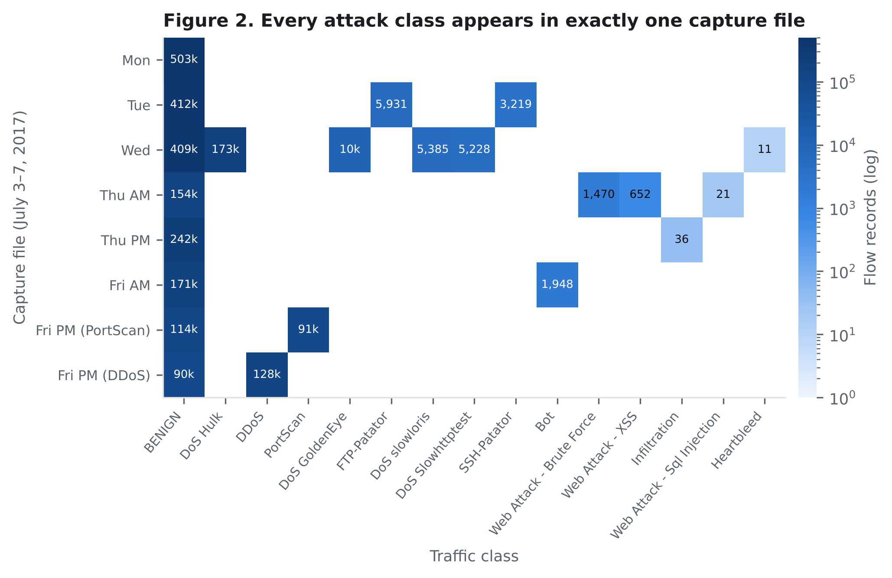
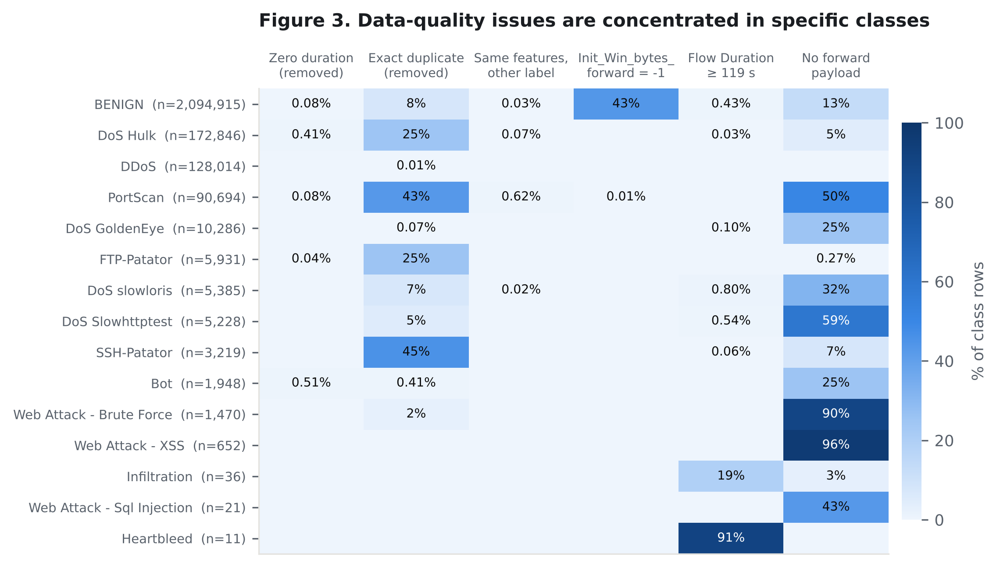
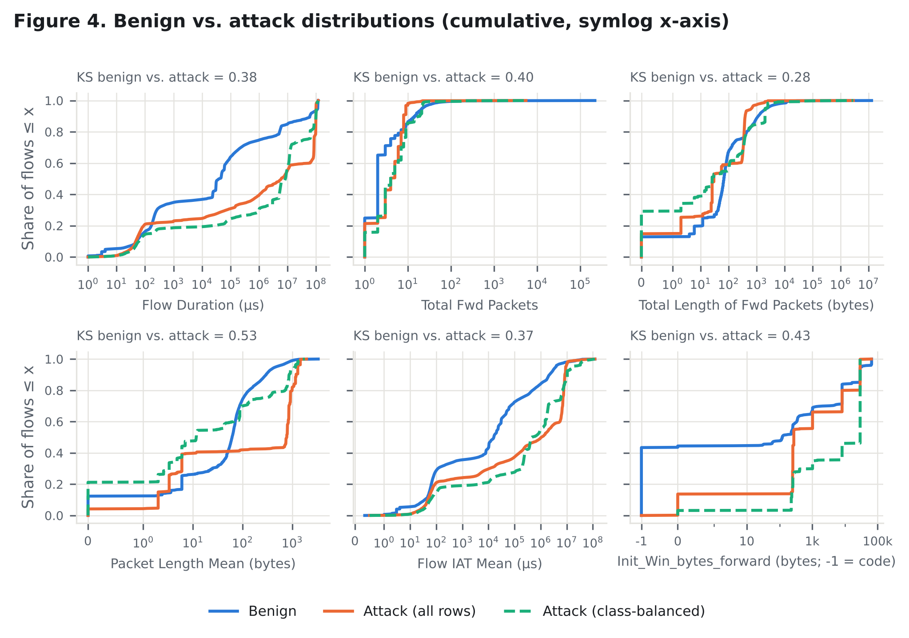
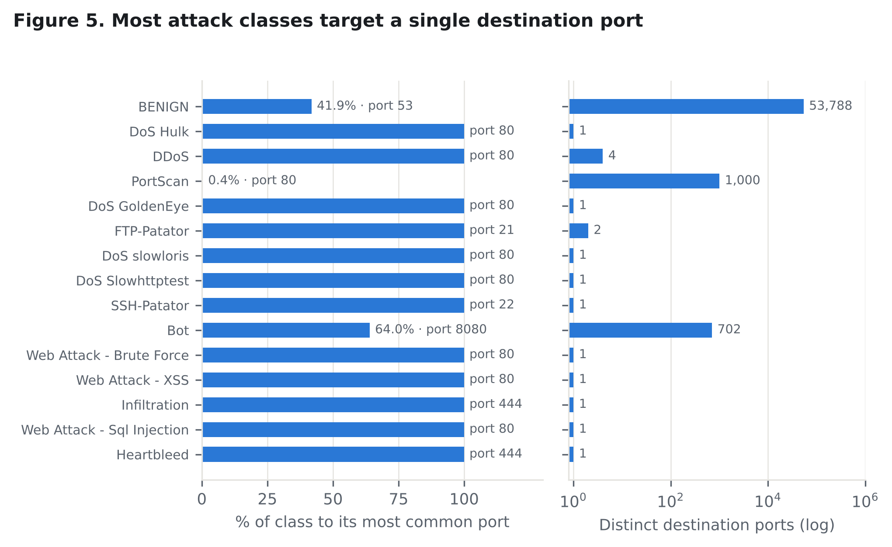
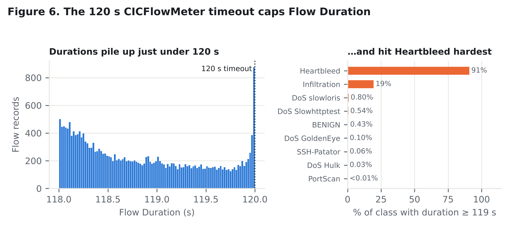
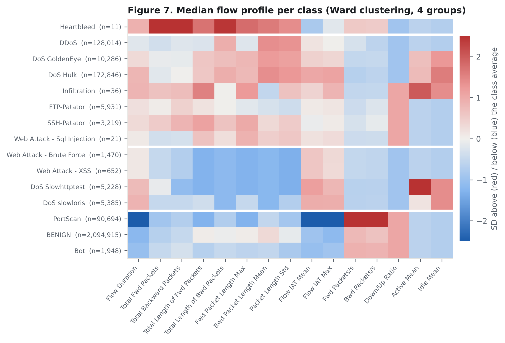

Introduction
Every second, millions of packets move across enterprise networks. A small fraction of them are hostile. Network intrusion detection is the problem of telling those apart from ordinary traffic, quickly enough to act on the difference.
Deep packet inspection — reading payload contents — is expensive at line rate and often impossible once traffic is encrypted. Operational detection therefore leans on flow records: compact per-connection summaries of timing, volume, direction, and packet-size statistics, carrying no payload at all. This project asks how much of the malicious-versus-benign distinction survives in that reduced representation, and whether different attack types leave traces distinguishable from one another within it.
Stakeholders
- Network defenders and SOC analysts, who tune detection thresholds and absorb the cost of false positives — every spurious alert consumes analyst attention that a real incident needs.
- Organizations operating internet-facing infrastructure, for whom undetected intrusion means data loss, service disruption, and regulatory exposure.
- End users, whose data sits behind those systems and who have no visibility into whether detection is working.
- The security research community, which depends on shared benchmark datasets to compare methods — and is affected when those benchmarks turn out to have defects.
What is already known, and the gap
Flow-based intrusion detection is a mature field, and CICIDS2017 is one of its most widely used benchmarks. A large published literature reports detection results on it, frequently at accuracies above 99%.
That headline number is the gap. Two independent peer-reviewed audits ([2], [3]) found that the dataset contains flow-construction errors affecting roughly a quarter of all records, and that labels were assigned by source/destination IP address and time window without verifying that an attack had actually executed. Because attacker hosts are fixed throughout the capture, a model given IP or timestamp features can reach near-perfect accuracy by memorizing which machine was the attacker — learning nothing transferable about attacks at all.
Much of the published work on this dataset predates those audits or does not account for them. The open question is therefore not whether a model can classify CICIDS2017 accurately — that is settled, and possibly meaningless — but which of the apparent distinctions between traffic classes survive once the known artifacts are removed.
Dataset at a glance

| Capture file | Size | Primary content |
|---|---|---|
| Monday-WorkingHours | 177 MB | Benign only |
| Tuesday-WorkingHours | 135 MB | Brute force (FTP, SSH) |
| Wednesday-workingHours | 225 MB | DoS / Heartbleed |
| Thursday-Morning-WebAttacks | 52 MB | Web attacks |
| Thursday-Afternoon-Infilteration | 83 MB | Infiltration |
| Friday-Morning | 58 MB | Botnet |
| Friday-Afternoon-PortScan | 77 MB | Port scan |
| Friday-Afternoon-DDos | 77 MB | DDoS |
CICIDS2017, Canadian Institute for Cybersecurity [1]. 885 MB across eight files: 2,830,743 flow records × 79 columns (78 flow features plus the label).
Project blueprint
- Characterize the dataset as it actually is — class balance, feature distributions, per-day composition, missing and degenerate values.
- Establish which flow features separate benign from malicious traffic, and attack categories from each other, with host identifiers and timestamps excluded from the outset.
- Test whether those separations hold across capture days, including against attack types absent from training.
- Quantify how much the documented labeling defects move the results, by comparing outcomes with known-suspect classes retained versus excluded.
- Report per class, with scope limits stated plainly: the findings describe a five-day simulated capture from July 2017 and a fixed attack catalog.
Research Questions
- Descriptive How are flow-level features distributed across benign traffic and each attack class, how severe is the class imbalance, and how do the known data-quality issues (duplicates, the 120-second timeout, the −1 window code, zero-payload flows) vary by class?
- Comparative Excluding destination port, which flow features separate the attack categories that have enough records to compare (the 11 attack classes with at least 600 flows), and which separations survive when artifact-prone features (Init_Win_bytes_*, durations at the 120-second cap) are removed?
- Relationship / pattern Do the four behavioral groups seen in the exploratory analysis hold up when individual flows are clustered, and are the overlapping pairs (Web Attack – Brute Force vs. XSS; Bot vs. BENIGN) separable at the flow level at all?
- Predictive Using leave-one-day-out evaluation on deduplicated data, how well does a benign-versus-malicious model detect the held-out day's attacks, all of which are unseen types, and how much of any drop comes from shifted benign traffic rather than from the new attacks?
- Explanatory How much do per-class results change when flows with identifiable defects (zero-payload web-attack flows, flows at the 120-second cap, feature vectors shared across labels) are excluded versus retained?
The questions are ordered to build on one another: RQ1 establishes what the data contains, RQ2 and RQ3 examine separability, RQ4 tests whether it generalizes, and RQ5 asks how much of the preceding is an artifact.
Changes after exploring the data (Milestone 2)
- RQ1 now describes data-quality issues per class, because they turned out to be class-specific (Figure 3).
- RQ2 excludes destination port, a testbed artifact (Figure 5), drops the three classes too small for statistics, and tests whether separations survive without artifact-prone features (Figure 4).
- RQ3 turns a general question into specific hypotheses from the per-class profiles (Figure 7).
- RQ4 becomes leave-one-day-out on deduplicated data, because every attack class lives on a single day and benign traffic shifts between days (Figure 2).
- RQ5 is kept and defined at the row level, since the exploration identified concrete, measurable defects.
Background & Related Work
The dataset and its intent
Sharafaldin, Habibi Lashkari, and Ghorbani [1] introduced CICIDS2017 as a response to the ageing benchmarks the field had been relying on. Their paper documents the testbed, the abstracted user profiles used to generate realistic benign background traffic, the schedule of attacks executed across the five days, and the CICFlowMeter extraction that produces the ~85 features per flow. It is the authoritative source for what each label is supposed to mean, and we treat it as the specification against which the data is checked.
What later audits found
Engelen, Rimmer, and Joosen [2] rebuilt the dataset from the original packet captures and found three problems that bear directly on any analysis of it. CICFlowMeter terminated flows on a single FIN packet rather than waiting for a bidirectional teardown, generating spurious trailing flows that inherited attack labels — 25.9% of the dataset, and as much as 50% within some attack classes. The labeling procedure used only IP addresses and time windows, so several Web Attack classes consist largely of connections whose payload never executed. And the DoS Hulk tool used in the capture was deprecated, sending malformed HTTP headers that did not produce the intended effect.
Lanvin and colleagues [3] reached compatible conclusions independently, by a different route — documenting packet misordering, duplication, and attacks executed but never labeled — and then quantified how much supervised detection performance shifts once corrections are applied. That two separate teams converged here is what makes the finding hard to set aside.
How this shapes our work
We adopt the methodological recommendations these audits make rather than treating them as caveats to mention and move past. Source and destination IP addresses and timestamps are excluded from modelling, because attacker hosts are fixed and including them invites a model to identify attacks by machine identity. Results are reported per class rather than as aggregate accuracy, since aggregate figures on an imbalanced dataset conceal exactly the failures that matter. And label reliability is treated as a question the project investigates, not an assumption it inherits.
Data & Exploration
Where the data comes from, how we turned it into an analysis-ready dataset, what is wrong with it, and what exploratory analysis shows it can and cannot support.
Source and provenance
- Source
- CICIDS2017, Canadian Institute for Cybersecurity, University of New Brunswick (dataset page) [1].
- Release, size and access
-
MachineLearningCSV.zip: eight CSV files, 885 MB on disk, 2,830,743 flow records × 79 columns (78 flow features plus the label). Downloaded directly from CIC after its registration form, in September 2026; no API or scraping is involved. Step-by-step instructions are in data/README.md. - Coverage
- Five working days, Monday July 3 to Friday July 7, 2017. Not a geographic sample: all traffic comes from one testbed built by CIC, with separate attacker and victim networks. Benign traffic is generated by scripted user profiles, not real users.
- Unit of observation
- One bidirectional network flow as built by CICFlowMeter. A flow ends on a FIN or RST packet or after a 120-second timeout.
- License and terms
- CIC states no license. It grants access to researchers and asks that the dataset paper [1] be cited. Because no redistribution right is granted, the repository contains code and acquisition instructions but none of the data.
- Why it fits, and what it lacks
- Labeled flows with 78 flow-level timing, volume and size features are exactly what our questions need. This release omits payloads, IP addresses, source ports, protocol and timestamps, so host identity and timing within a day cannot be studied, and it covers only 14 scripted attack types.
Data dictionary
The 69 features kept after cleaning, grouped by what they measure. Meanings come
from the CICFlowMeter documentation; we confirmed units by recomputing Flow
Bytes/s from total bytes and duration. The eight CSV files share one schema and
were stacked rather than joined, with a source_file column recording
each row's origin.
| Group | Columns | Type · units | Notes |
|---|---|---|---|
| Target | Label, is_attack | text, 15 classes · 0/1 | is_attack (derived) is the RQ4 prediction target; Label drives the per-class questions |
| Service | Destination Port | integer · port number | Kept for description, excluded from modeling (Figure 5) |
| Duration and timing | Flow Duration; Flow / Fwd / Bwd IAT Mean, Std, Max, Min; Fwd / Bwd IAT Total; Active and Idle Mean, Std, Max, Min | integer or decimal · microseconds | Flow Duration is capped by the 120 s timeout (Figure 6) |
| Volume | Total Fwd / Backward Packets; Total Length of Fwd / Bwd Packets; Subflow Fwd / Bwd Packets and Bytes; act_data_pkt_fwd | integer · packets or bytes | Subflow packet counts are identical to the totals |
| Packet size | Fwd / Bwd Packet Length Max, Min, Mean, Std; Min / Max Packet Length; Packet Length Mean, Std, Variance; Average Packet Size; Avg Fwd / Bwd Segment Size; Fwd / Bwd Header Length; min_seg_size_forward | integer or decimal · bytes | Heavily right-skewed |
| Rates | Flow Bytes/s, Flow Packets/s, Fwd / Bwd Packets/s; Down/Up Ratio | decimal · per second; integer ratio | Undefined when duration is 0 (those rows are removed) |
| TCP flags | FIN, SYN, RST, PSH, ACK, URG, CWE, ECE Flag Count; Fwd PSH / URG Flags | integer · 0/1 indicator | Only 0 or 1 despite the names; Fwd PSH = SYN and Fwd URG = CWE row for row |
| TCP window | Init_Win_bytes_forward / backward | integer · bytes | −1 means no TCP window was seen (non-TCP flow); treated as a category |
| Bookkeeping | source_file | text · 8 capture files | Added by us |
Cleaning and preprocessing
All cleaning is in notebooks/01-data-cleaning.ipynb, which reads the untouched raw files and writes one analysis-ready CSV. src/m2_rebuild_clean.py replays the same steps as a script and reproduces every count below.
| Step | Decision | Rows after |
|---|---|---|
| Load | Stack 8 files; strip the leading space from 65 of 79 headers | 2,830,743 |
| Missing values | Remove 2,867 zero-duration rows whose per-second rates were NaN or infinite | 2,827,876 |
| Duplicates | Remove 307,078 exact duplicates (10.86%), keeping one copy | 2,520,798 |
| Labels, columns | Fix the broken dash in three Web Attack labels; drop 8 always-zero columns and a duplicated header-length column | 2,520,798 |
| Impossible values | Remove 142 rows with negative duration or sizes (all BENIGN) | 2,520,656 |
| Clipping, target | Set 2,773 negative minimum inter-arrival times to 0; add is_attack | 2,520,656 × 72 |
Before and after — real rows from the raw files:
| Issue | Before | After, and why |
|---|---|---|
| Zero duration | Flow Duration 0 µs, 2 packets, 37 bytes; Flow Bytes/s = ∞, Flow Packets/s = ∞ | Row removed. A rate over zero time is undefined, so any filled-in value would be invented. |
| Duplicate | One SSH-Patator flow (port 22, 74 µs, one packet each way, 0 bytes) appears 116 times | Kept once; SSH-Patator falls from 5,897 to 3,219 rows. Copies would land on both sides of a train/test split. |
| Encoding | Web Attack � XSS | Web Attack - XSS |
| Impossible value | Flow Duration −1 µs; Flow Bytes/s −12,000,000 | Row removed: a flow cannot last less than zero time. |
| Rounding error | Flow IAT Min −1 µs | Clipped to 0, the nearest real value. Removing these rows would have cost 4 of the 11 Heartbleed flows. |
Kept on purpose: packets larger than the 1,500-byte Ethernet MTU (in 90% of DoS Hulk flows, so part of the attack signal, not noise), the −1 window code, and durations at the 120-second cap. Scaling is deferred to modeling so it can be fit on training data only.
Data quality, bias and ethics
| Dimension | What we found |
|---|---|
| Completeness | Only 0.10% of rows had missing values, all a division-by-zero artifact. The larger gap is by design: no IPs, timestamps or protocol. |
| Consistency | Besides the dropped duplicate column, four more column pairs are identical row for row, and 66 feature pairs have |Spearman ρ| ≥ 0.95. The 69 features carry far less independent information than their number suggests. |
| Validity | The −1 window code marks non-TCP flows: none has a SYN or ACK flag and 96% go to port 53 (DNS). 1,394 cleaned rows have exactly the same features as a row with a different label, a floor on achievable error. |
| Representativeness | Attacks are 16.9% of rows; the largest class outnumbers the smallest about 190,000 to 1; three classes (DoS Hulk, DDoS, PortScan) make up 92% of attack rows; every attack class sits in exactly one capture file. |
| Usability | Heartbleed (11 rows), SQL Injection (21) and Infiltration (36) are too small for statistical claims. The cleaned data fits in about 1.45 GB of memory. |
Milestone 0 risks, revisited.
- Class imbalance — confirmed, worse than expected. We now plan per-class reporting and class-weighted evaluation. The proposal's oversampling would mostly duplicate Heartbleed's near-identical timeout fragments.
- Missing attack types — confirmed. The usable catalog is 11 attack classes, not 14.
- Narrow time window — confirmed and sharpened. Day and class are confounded, and benign traffic itself shifts between days.
- Compute — reduced. All Milestone 2 work ran on one ordinary machine.
- New: 10.86% exact duplicates (85,264 of them spanning two capture files), the 120-second timeout artifact, the −1 window code acting as a protocol proxy, and labels that don't reflect executed attacks (90% of Web Attack – Brute Force and 96% of XSS flows carry no forward payload).
Privacy and licensing. All traffic is synthetic and the files we use contain no IP addresses, payloads or timestamps. We publish only figures and aggregate tables. The main ethical risk is overstated results: accuracies above 99% on this benchmark can mislead defenders, so we report per class and state scope limits plainly.
Exploratory analysis
Every feature is heavily right-skewed. Benign Flow Duration, for instance, has a mean of 12.2 s but a median of 0.04 s. So we summarize with medians and quartiles, plot on log scales, and compare distributions with the Kolmogorov–Smirnov (KS) distance: 0 means identical distributions, 1 means no overlap, and it works on features with different units.
| Feature | Benign median [Q1, Q3] | Attack median [Q1, Q3] |
|---|---|---|
| Flow Duration (s) | 0.040 [0.0002, 1.10] | 6.03 [0.012, 85.8] |
| Total Fwd Packets | 2 [2, 4] | 4 [2, 7] |
| Total Length of Fwd Packets (bytes) | 68 [18, 208] | 30 [2, 350] |
| Packet Length Mean (bytes) | 61.4 [6.0, 103.0] | 777.5 [3.3, 918.8] |
| Flow IAT Mean (ms) | 16.1 [0.08, 176.7] | 1,061 [2.9, 7,162] |







What the exploration changes: pooled benign-vs-attack comparisons overstate separability; Destination Port, the window fields and durations at the 120-second cap need special handling; some classes cannot be told apart at the flow level and three are too small to analyze; and day and class are confounded. The research questions were revised accordingly. The analysis code is in two notebooks, 01-data-cleaning.ipynb and 02-eda.ipynb, and the scripts in src/.
Team
Christopher Taylor
Christopher is a data scientist at TUMI Genomics, where he unified 17 source systems into a single customer database and built the automated monitoring that catches data-quality degradation at ingest rather than downstream. He began his career as a Mandarin cryptologic linguist in the U.S. Air Force doing signals intelligence analysis — the same problem this project takes up, one layer down the stack — and that combination is why the team treats the benchmark dataset's documented labeling errors as a question to investigate rather than an assumption to inherit. He holds a BASc in Computer Science and a BA in Molecular, Cellular & Developmental Biology from CU Boulder, where he is completing graduate data science coursework.
Coordination · Data · AnalysisLuis Echeverry
Luis is currently an M.S. Data Science student at CU Boulder. He began his career as a Junior Legislative Aide at the Colorado State Capitol, after earning a BA in Psychology at CU Boulder. His background in humanities has shaped his worldview, and he believes communities that are marginalized can benefit from understanding the patterns in data, and he wants to use the tools he is learning to make a positive impact. Cybersecurity is a field he is eager to explore, and on this project, he leads data preprocessing.
Data · ReproducibilityTyler Garfield
Tyler attended the University of Arizona for his Bachelor's in Computer Science during his undergraduate career. There, he found the DoW SMART scholarship. Due to this, he has had the honor of gaining real-world internship experience over the past two summers. He is now pursuing his Master's in Data Science here at CU Boulder. He also took three cybersecurity courses during his high school career. While he doesn't venture into the cybersecurity realm often these days, he is super excited to do a data science project on this topic. In everything he does with data, he aims to provide meaningful insights and assistance that make others' lives better. Because if there is one thing life has taught him, it is that people matter far more than technology.
Analysis · VisualizationResponsibilities
Roles are initial assignments. They overlap in practice and may change as the project develops.
- Coordination & documentation — milestone tracking, website content, repository documentation.
- Data & reproducibility — acquisition, cleaning, sampling, environment setup, repository hygiene.
- Analysis & visualization — exploratory analysis, comparative work, figures.
Proposal Overview
- Problem
- Network intrusion detection depends on distinguishing malicious from benign traffic, and on separating attack types from one another, using flow records rather than payload inspection. High-volume environments need detection that is both fast and reliable.
- Goal
- Characterize the flow-level patterns that separate benign from malicious traffic and attack categories from each other, while assessing how far those patterns reflect attacker behavior rather than artifacts of how the dataset was constructed.
- Data sources
- CICIDS2017 (Canadian Institute for Cybersecurity): eight CSV files of labeled bidirectional flow records covering five days of simulated enterprise traffic in July 2017 — 2,830,743 flows, 78 features per flow, 885 MB in total. Obtained from CIC after registration. CIC states no license and grants no redistribution right, so the project repository carries code and acquisition instructions rather than the data. See Data & Exploration.
- Current questions
- See Research Questions.
- Major constraints
- Severe class imbalance, with benign flows dominating and Monday benign-only; a fixed 2017 attack catalog that cannot speak to novel or contemporary attack vectors; and documented labeling and flow-construction errors that limit which per-class findings can be trusted.
Change since Milestone 0
The approved proposal treated source and destination IP address and port as core descriptive features, and did not account for published errata on this dataset. Both have been revised.
Host identifiers and timestamps are now excluded from modelling, because attacker hosts are fixed in this simulation and including them lets a model memorize machine identity rather than attack behavior. Label reliability is treated as an explicit analysis question rather than an assumption. The change narrows the scope but makes the findings defensible — it converts a hidden threat to validity into a stated one, and gives the project a question worth answering rather than a benchmark score worth reporting.
References
IEEE citation style.
-
I. Sharafaldin, A. Habibi Lashkari, and A. A. Ghorbani, "Toward Generating a
New Intrusion Detection Dataset and Intrusion Traffic Characterization," in
Proc. 4th Int. Conf. Information Systems Security and Privacy
(ICISSP), Funchal, Portugal, Jan. 2018, pp. 108–116.
PDF
The primary source for CICIDS2017 — testbed design, attack schedule, benign traffic generation, and feature extraction. Supplies the ground truth for what each label is intended to mean.
-
G. Engelen, V. Rimmer, and W. Joosen, "Troubleshooting an Intrusion Detection
Dataset: the CICIDS2017 Case Study," in Proc. IEEE Security and Privacy
Workshops (SPW) — Workshop on Traffic Measurements for Cybersecurity
(WTMC), 2021, pp. 7–12.
PDF
A systematic audit reconstructing the dataset from the original packet captures. Identifies the flow-construction bug affecting 25.9% of records, the IP-and-time-window labeling procedure, and the shortcut-learning risk from host identifiers. Its recommendations — feature-importance sanity checks, per-class reporting — are adopted directly in this project.
-
M. Lanvin, P.-F. Gimenez, Y. Han, F. Majorczyk, L. Mé, and É. Totel, "Errors
in the CICIDS2017 Dataset and the Significant Differences in Detection
Performances It Makes," in Risks and Security of Internet and Systems
(CRiSIS 2022), Lecture Notes in Computer Science, vol. 13857. Cham,
Switzerland: Springer, 2023, pp. 18–33.
DOI
Independent confirmation by a separate team using a different method. Documents packet misordering, duplication, and unlabeled executed attacks, and quantifies the resulting shift in detection performance — the justification for RQ5.